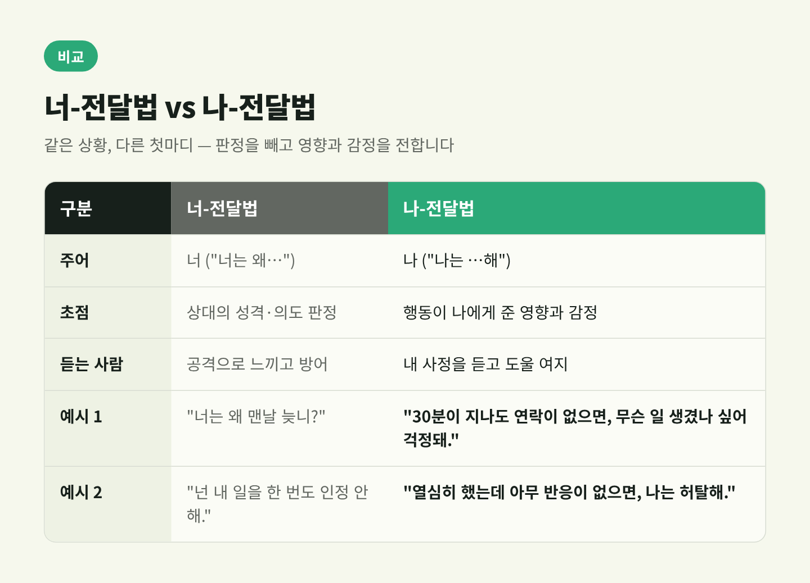
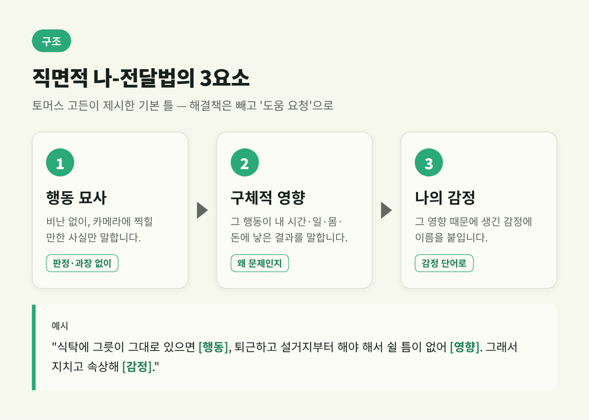
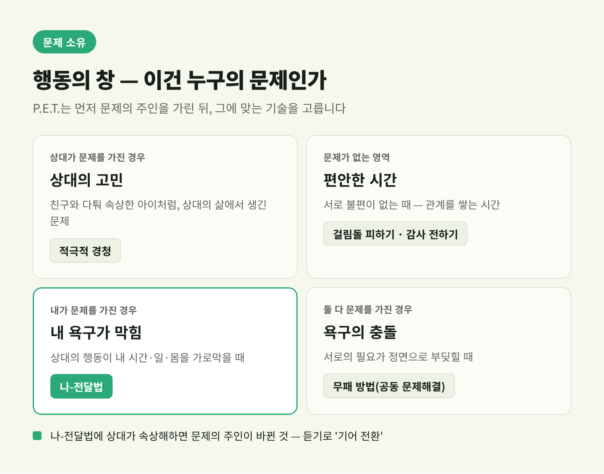
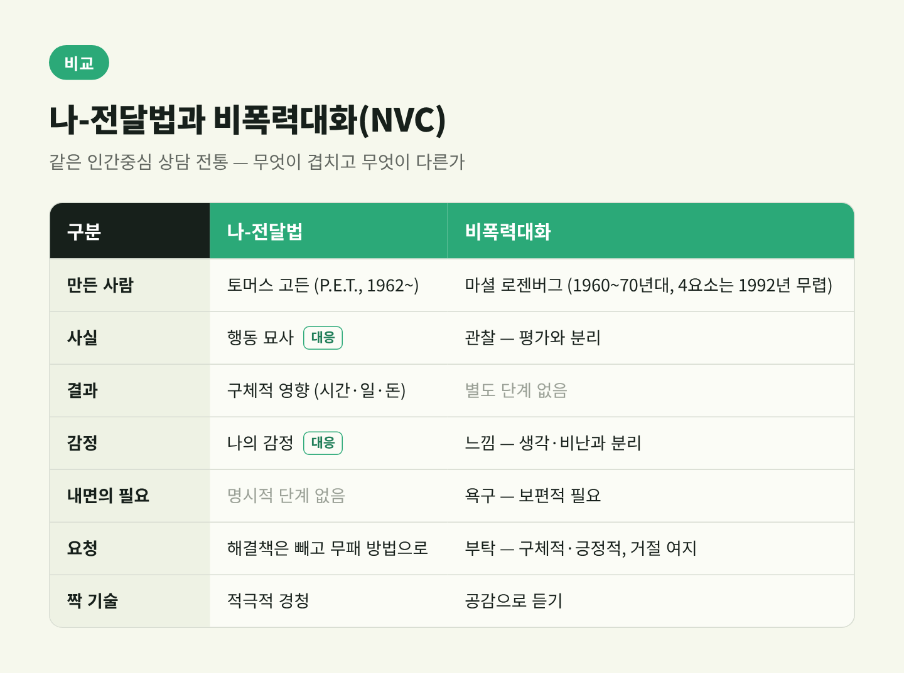
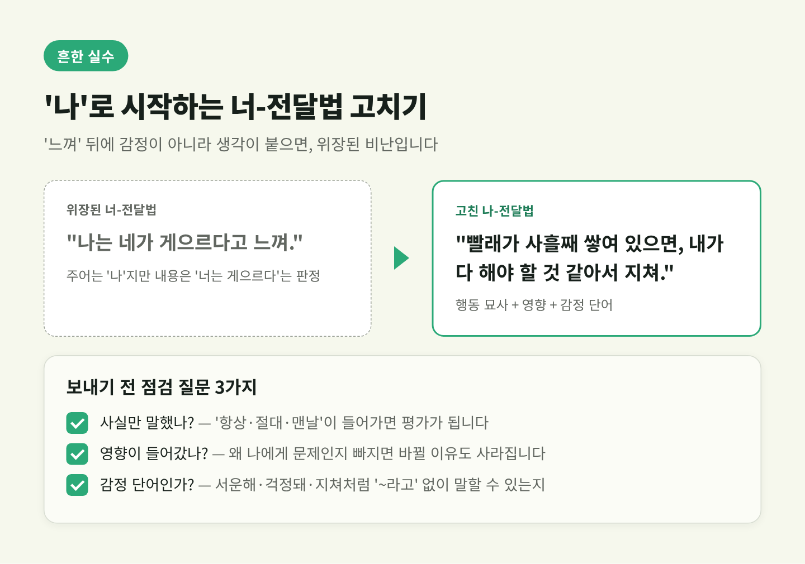

나-전달법 대화법 — 비난 없이 내 마음을 전하는 3단계 원리

이번 글에서는 상담과 부모교육 현장에서 가장 자주 가르치는 대화 기술, 나-전달법을 정리해 보겠습니다.
결론부터 말씀드리면, 나-전달법은 상대를 탓하는 대신 '그 행동이 나에게 어떤 영향을 주었고 나는 어떤 마음인지'를 전하는 말하기입니다.
연구는 대체로 방어를 줄인다는 쪽을 가리키지만, 만능 공식은 아니라는 점도 함께 짚겠습니다.
■ 1962년, 부모 교실에서 시작된 말하기
나-전달법은 미국 임상심리학자 토머스 고든(1918~2002)이 만든 개념입니다.
그는 인간중심 상담으로 알려진 칼 로저스의 동료였습니다.
고든은 1962년에 부모를 위한 훈련 프로그램을 떠올렸고, 같은 해 첫 강좌를 열었습니다.
이것이 '부모 역할 훈련', 곧 P.E.T.(Parent Effectiveness Training)입니다.
1970년에는 같은 이름의 책이 나와 베스트셀러가 되었고, 2000년에 개정판이 나왔습니다.
1974년에는 교사용 T.E.T.도 출간되었습니다.
보급 범위는 시점마다 다르게 집계됩니다.
1997년 국내 기사는 42개국, 고든 측 회고 글은 43개국이라 적었습니다.
2018년 고든 측 자료는 50개국 이상, 위키백과는 2020년 기준 53개국으로 소개합니다.
우리나라에는 1989년에 들어와, 1997년 무렵까지 약 6만 명이 강좌를 들은 것으로 보도되었습니다.
고든이 내린 정의는 짧습니다.
상대의 행동이 나에게 어떤 영향을 주는지를 비난 없이 말하는 것.
그는 이 말하기가 말하는 사람의 '채워지지 않은 욕구'에서 출발한다고 보았습니다.
■ 너-전달법은 왜 문을 닫게 할까
익숙한 장면을 떠올려 보겠습니다.
"너는 왜 맨날 늦니?" "넌 내 말을 한 번도 안 듣잖아."
이런 문장은 주어가 '너'입니다.
상대의 행동을 넘어 성격과 의도까지 판정합니다.
듣는 사람은 내용보다 먼저 공격을 느끼고, 자기를 지키느라 귀를 닫습니다.
같은 마음을 이렇게 바꿀 수 있습니다.
"약속 시간이 30분 지나도 연락이 없으면, 나는 무슨 일이 생겼나 싶어 걱정돼."
사실은 그대로이고, 판정은 빠졌습니다.
고든은 이런 '너'식 반응을 포함해 대화를 막는 말버릇 12가지를 '걸림돌'로 정리했습니다.
명령, 경고, 훈계, 충고, 논리로 설득하기, 비판, 칭찬, 낙인, 분석, 안심시키기, 캐묻기, 회피입니다.
칭찬과 안심시키기까지 들어 있다는 점이 눈에 띕니다.
상대의 감정을 듣기 전에 서둘러 정리해 버리면, 선의라도 대화가 끊길 수 있다는 뜻입니다.

■ 3요소 구조 — 행동, 영향, 감정
고든이 제시한 '직면적 나-전달법'은 세 부분으로 이루어집니다.
- 행동 묘사 — 비난 없이, 카메라에 찍힐 만한 사실만 말합니다.
- 구체적 영향 — 그 행동이 내 시간, 일, 몸, 돈에 어떤 결과를 낳았는지 말합니다.
- 나의 감정 — 그 영향 때문에 내가 느끼는 감정을 이름 붙입니다.
예를 들면 이렇습니다.
"식탁에 그릇이 그대로 있으면(행동), 나는 퇴근하고 설거지부터 해야 해서 쉴 틈이 없어(영향). 그래서 지치고 속상해(감정)."
고든은 이 말을 명령이 아니라 '도움 요청'으로 보았습니다.
그래서 고든 측 교육 자료는 해결책을 빼라고 권합니다.
상대가 무엇을 해야 하는지가 아니라, 왜 그 행동이 나에게 문제인지를 말하라는 것입니다.
해결책을 정하는 몫을 상대에게 남겨 두어야 상대도 도울 마음이 생긴다는 논리입니다.
또 하나의 조언이 있습니다.
화가 치민다면 그 밑을 들여다보라는 것입니다.
분노 아래에는 두려움이나 걱정이 숨어 있는 경우가 많습니다.
"화났어"보다 "다칠까 봐 겁났어"가 더 정확한 감정일 수 있습니다.

■ 먼저 물어야 할 것 — 이건 누구의 문제인가
나-전달법은 아무 때나 쓰는 기술이 아닙니다.
P.E.T.의 중심에는 '문제 소유' 가리기가 있습니다.
고든 측은 이를 프로그램 전체를 묶는 핵심 요소라고 설명합니다.
도구는 '행동의 창'이라는 네 칸짜리 그림입니다.
- 상대가 문제를 가진 경우 — 친구와 다퉈 속상한 아이처럼, 상대의 삶에서 생긴 고민입니다. 이때는 적극적 경청을 씁니다.
- 문제가 없는 영역 — 서로 불편이 없는 시간입니다. 걸림돌을 피하고 고마움을 전합니다.
- 내가 문제를 가진 경우 — 상대의 행동이 내 욕구를 가로막을 때입니다. 여기가 나-전달법의 자리입니다.
- 둘 다 문제를 가진 경우 — 욕구가 정면으로 부딪힐 때입니다. '무패(無敗) 방법'이라 불리는 공동 문제해결로 넘어갑니다.
적극적 경청은 상대의 말과 그 아래 감정을 되돌려 말해 이해를 확인하는 기술입니다.
로저스가 '감정의 반영'이라 부르던 것을 고든이 이 이름으로 정리했습니다.
두 기술은 짝으로 움직입니다.
내 마음을 전했더니 상대가 속상해하거나 반발한다면, 그 순간 문제의 주인이 바뀐 것입니다.
고든 측은 이때 말하기를 멈추고 듣기로 '기어를 바꾸라'고 권합니다.
상대의 마음이 가라앉은 뒤에 다시 나-전달법을 보내면 됩니다.

■ 비폭력대화와는 무엇이 다를까
나-전달법과 자주 함께 언급되는 것이 마셜 로젠버그의 비폭력대화(NVC)입니다.
로젠버그 역시 로저스의 영향을 받은 임상심리학자였습니다.
1960~70년대에 다듬어졌고, 1972년 훈련 매뉴얼이 최초 형태이며, 1992년 무렵 지금의 4요소 형태가 되었습니다.
네 요소는 관찰, 느낌, 욕구, 부탁입니다.
- 관찰 — 평가가 섞이지 않은 사실. 나-전달법의 '행동 묘사'와 거의 같습니다.
- 느낌 — 생각이나 비난이 섞이지 않은 감정. 나-전달법의 '감정'에 해당합니다.
- 욕구 — 그 느낌 밑에 있는 보편적 필요. 나-전달법에는 명시적 단계로 없는 부분입니다.
- 부탁 — 구체적이고 긍정적인 지금의 행동 요청. 상대가 거절할 여지를 남깁니다.
차이는 두 군데에서 드러납니다.
나-전달법의 '영향'은 바깥의 구체적 결과에 초점을 둡니다.
비폭력대화는 시선을 안쪽으로 돌려 내가 원하는 '욕구'를 말합니다.
또 고든은 해결책을 말하지 말라고 하고, 그 몫을 무패 방법으로 넘깁니다.
로젠버그는 '부탁'을 아예 대화의 마지막 단계로 둡니다.
두 방식 모두 연습용 틀이라는 점은 같습니다.
비폭력대화 역시 근거가 아직 작고 들쭉날쭉하다는 평가, 대본처럼 쓰면 부자연스럽게 들린다는 비판을 함께 받고 있습니다.

■ 연구가 보여 주는 효과와 한계
효과를 지지하는 연구부터 보겠습니다.
1992년 쿠바니 연구팀은 고등학생들에게 친한 상대와 관계 문제를 이야기하는 장면을 상상하게 하고, 네 가지 말투에 대한 반응을 평가하게 했습니다.
비난조의 '너' 진술은 자기주장적인 '나' 진술보다 더 불쾌하게 느껴졌고, 더 적대적인 반응을 불렀습니다.
흥미롭게도 분노를 드러낸 말이 속상함을 드러낸 말보다 더 적대적인 반응을 낳았습니다.
남녀 차이는 없었습니다.
2018년 학술지 PeerJ에 실린 연구는 대학생 253명에게 여섯 가지 갈등 상황과 여덟 가지 첫마디를 제시했습니다.
'나' 언어는 '너' 언어보다 상대가 방어적으로 나올 가능성을 뚜렷하게 낮게 평가받았습니다.
가장 방어를 덜 부른 말은 '나' 언어에 나의 관점과 상대의 관점을 함께 담은 문장이었습니다.
"네가 그렇게 느끼는 건 이해해. 그런데 나는 이렇게 느껴" 같은 형태입니다.
나-전달법에 경청이 더해질 때 힘이 커진다는 점을 숫자로 보여 준 셈입니다.
홍콩 아동을 대상으로 한 2003년 연구에서도, 아이들은 고통을 털어놓는 어머니의 나-전달법에 가장 수용적이었다고 보고됩니다.
반대쪽 결과도 있습니다.
2005년 비푸스와 영의 연구에서는 부정적 감정을 표현할 때 나-전달법과 너-전달법에 대한 반응 차이가 없었고, 긍정적 감정에서만 차이가 났다고 요약됩니다.
1984년 부부 연구에서는 적극적 경청과 나-진술을 집중 훈련한 부부가 부정적 상호작용은 줄었지만 긍정적 상호작용은 늘지 않았고, 약 8개월 뒤 다시 나빠졌다는 해석이 소개됩니다.
부부 연구로 유명한 존 가트맨도 화가 난 배우자끼리는 공감을 유지하기 어렵다며, 나-진술 교육의 근거에 의문을 표했습니다.
연구 방식의 한계도 있습니다.
2018년 연구는 실제 대화가 아니라 문장을 읽고 평가하는 방식이어서, 연구진 스스로 문자나 이메일에 더 가까운 결과일 수 있다고 밝혔습니다.
쿠바니 연구들의 표본은 대체로 16~40명 수준이었습니다.
정리하면 이렇습니다.
나-전달법은 첫마디의 공격성을 낮추는 데에는 비교적 일관된 근거가 있습니다.
그러나 그것만으로 관계가 오래 좋아진다고 말할 근거는 아직 충분하지 않습니다.
■ 가장 흔한 실수 — '나'로 시작하는 너-전달법
나-전달법을 처음 연습할 때 가장 많이 걸리는 함정이 있습니다.
"나는 네가 게으르다고 느껴."
주어는 '나'이지만, 내용은 '너는 게으르다'는 판정입니다.
'느낀다'는 동사 뒤에 감정이 아니라 생각이 붙어 있기 때문입니다.
고든도 "나는 네가 방어적이라고 느껴" 같은 문장은 지각이나 비판일 뿐 진짜 나-전달법이 아니라고 했습니다.
점검 방법은 간단합니다.
'느껴' 앞의 말을 '서운해, 걱정돼, 지쳐, 당황스러워' 같은 감정 단어로 바꿀 수 있는지 보면 됩니다.
'~라고 느껴'처럼 문장이 들어간다면 대개 판단입니다.
몇 가지 실수가 더 있습니다.
- '항상, 절대'를 넣는 것 — 묘사가 아니라 평가가 됩니다.
- 영향을 빼는 것 — 상대가 바뀔 이유를 알 수 없습니다. 고든 측도 실제 영향을 말하지 않으면 변화를 기대하기 어렵다고 말합니다.
- 해결책을 끼워 넣는 것 — "그러니까 당장 치워"가 붙으면 다시 명령이 됩니다.
- 말과 표정이 어긋나는 것 — 차가운 어조와 굳은 표정은 문장의 내용을 지웁니다.

■ 장면별 예시 문장
아래 예시는 특정 인물이 아닌 일반화된 상황입니다.
그대로 외우기보다 자기 말투로 바꿔 보시길 권합니다.
부모와 자녀
- 너-전달법: "넌 왜 맨날 게임만 하니?"
- 나-전달법: "밤 11시가 넘어도 방에서 게임 소리가 들리면, 아침에 못 일어날까 봐 엄마는 걱정이 돼."
부부
- 너-전달법: "당신은 집안일에 관심이 없어."
- 나-전달법: "주말에 장보기와 청소를 나 혼자 하고 나면, 쉴 시간이 없어서 많이 지치고 서운해."
교사와 학생
- 너-전달법: "너 때문에 수업이 엉망이야."
- 나-전달법: "설명하는 중에 옆 친구와 이야기 소리가 들리면, 내가 흐름을 놓쳐서 같은 말을 반복하게 돼. 그게 난감해."
상대가 "그럼 나보고 어쩌라고"라고 반발할 수도 있습니다.
그때는 다시 설명하기보다 "내 말이 잔소리처럼 들렸구나"라고 들어 주는 편이 낫습니다.
말하기와 듣기를 오가는 것, 그것이 고든이 처음 설계한 대화의 모습입니다.
마지막으로 한 가지만 덧붙이겠습니다.
예전에는 대화를 '상대를 바꾸는 기술'로 여겼다면, 나-전달법은 '내 마음을 정확히 보여 주는 일'에서 출발합니다.
상대가 어떻게 반응할지는 여전히 상대의 몫입니다.
나-전달법은 그 반응을 통제하는 도구가 아니라, 상대가 도울 수 있도록 문을 열어 두는 방식입니다.
"비난을 빼면, 마음이 들린다."
다만 이런 대화 연습만으로 풀리지 않는 관계도 있습니다.
갈등이 반복되거나, 대화를 시도할 때마다 불안과 무력감이 깊어진다면 혼자 감당하지 않으셨으면 합니다.
어려움이 지속된다면 학교 상담실, 청소년상담복지센터(청소년상담1388, 365일 24시간), 지역 정신건강복지센터 같은 전문상담의 도움을 받아 보시길 권합니다.
도움을 청하는 것 역시, 내 마음을 정직하게 전하는 또 하나의 나-전달법이라고 생각합니다.
참고자료
- Gordon Training International, "Origins of the Gordon Model" — https://www.gordontraining.com/thomasgordon/origins-of-the-gordon-model/
- Gordon Training International, "Everything You Need to Know About Confrontive I-Messages" — https://www.gordontraining.com/leadership/everything-need-know-confrontive-messages/
- Gordon Training International, P.E.T. Infographic (2018) — https://www.gordontraining.com/wp-content/uploads/GordonModelforParents-PETInfographic-Aug-2018-1.pdf
- Wikipedia, "Parent Effectiveness Training" — https://en.wikipedia.org/wiki/Parent_Effectiveness_Training
- Wikipedia, "I-message" — https://en.wikipedia.org/wiki/I-message
- Kubany et al. (1992), Adolescence 27(107) — https://pubmed.ncbi.nlm.nih.gov/1414562/
- Rogers et al. (2018), PeerJ 6:e4831 — https://peerj.com/articles/4831
- Psychology Today, "Are I-Statements Better than You-Statements?" — https://www.psychologytoday.com/us/blog/cui-bono/201211/are-i-statements-better-than-you-statements
- Beyond Intractability, "I-Messages and You-Messages" — https://www.beyondintractability.org/coreknowledge/iu-messages
- The Gottman Institute, "Softening Startup" — https://www.gottman.com/blog/softening-startup/
- Wikipedia, "Nonviolent Communication" — https://en.wikipedia.org/wiki/Nonviolent_Communication
- 4 Components of NVC — https://www.nonviolentcommunication.com/pdf_files/4_components_of_NVC.pdf
- 서울신문(1997.2.19) 부모역할훈련 기사 — https://www.seoul.co.kr/news/1997/02/19/19970219014001
- 복지로, "365일 24시간 열려있는 청소년상담 1388" — https://www.bokjiro.go.kr/ssis-tbu/cms/pc/news/promotion/1307645_1118.html